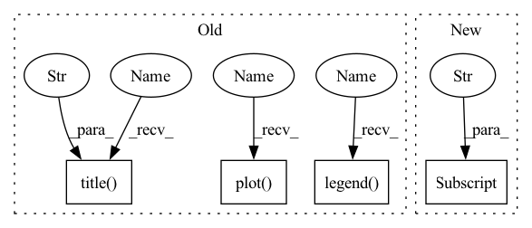

Pattern ID :17921

Before Change
res = minimize(lambda x: np.mean((np.log10(flux) - np.log10(sersic_np(R, x[0], x[1], x[2])))**2), x0 = x0, method = "SLSQP", bounds = ((0.5,6), (R[1]*1e-3, None), (flux[0]*1e-3, None))) //, method = "Nelder-Mead"
plt.scatter(R, np.log10(flux))
plt.plot(R, np.log10(sersic_np(R, res.x[0], res.x[1], res.x[2])), color = "r", label = "fit")
plt.plot(R, np.log10(sersic_np(R, x0[0], x0[1], x0[2])), color = "orange", label = "init")
plt.legend()
plt.title(f"{res.success} n {res.x[0]:0.3f} Rs {res.x[1]:0.3e} I0 {res.x[2]:0.3e}")
plt.savefig(f"{self.name}_coma_test.jpg")
plt.close()
for i, param in enumerate(["n", "Rs", "I0"]):
self[param].set_value(res.x[i], override_locked = (self[param].value is None))
After Change
res = minimize(lambda x: np.mean((np.log10(flux) - np.log10(sersic_np(R, x[0], x[1], x[2])))**2), x0 = x0, method = "SLSQP", bounds = ((0.5,6), (R[1]*1e-3, None), (flux[0]*1e-3, None)))
self["n"].set_value(res.x[0], override_locked = (self["n"].value is None))
self["Rs"].set_value(res.x[1], override_locked = (self["Rs"].value is None))
self["flux"].set_value(np.log10(sersic_I0_to_flux_np(res.x[2], self["n"].value.detach().item(), self["Rs"].value.detach().item(), self["q"].value.detach().item())), override_locked = (self["flux"].value is None))
if self["Rs"].uncertainty is None:
self["Rs"].set_uncertainty(0.02 * self["Rs"].value.detach().item(), override_locked = True)
if self["flux"].uncertainty is None:
In pattern: SUPERPATTERN
Frequency: 3
Non-data size: 4
Instances
Fragment ID: 58813339
Project Name: connorstoneastro/autoprof
Commit Name: 1755fb6a4b8078b28b0821a93913880d039f7f2f
Time: 2022-10-31
Author: connorstone628@gmail.com
File Name: autoprof/models/_shared_methods.py
M Class Name: AnonimousClass
N Class Name: AnonimousClass
M Method Name: sersic_initialize(1)
N Method Name: sersic_initialize(1)
M Parent Class:
N Parent Class:
M File Name: autoprof/models/_shared_methods.py
N File Name: autoprof/models/_shared_methods.py
M Start Line: 36
M End Line: 58
N Start Line: 39
N End Line: 54
'>
Before Change
]
res = minimize(lambda x: np.mean((np.log10(flux) - np.log10(sersic_np(R, x[0], x[1], x[2])))**2), x0 = x0, method = "SLSQP", bounds = ((0.5,6), (R[1]*1e-3, None), (flux[0]*1e-3, None))) //, method = "Nelder-Mead"
plt.scatter(R, np.log10(flux))
plt.plot(R, np.log10(sersic_np(R, res.x[0], res.x[1], res.x[2])), color = "r", label = "fit")
plt.plot(R, np.log10(sersic_np(R, x0[0], x0[1], x0[2])), color = "orange", label = "init")
plt.legend()
plt.title(f"{res.success} n {res.x[0]:0.3f} Rs {res.x[1]:0.3e} I0 {res.x[2]:0.3e}")
plt.savefig(f"{self.name}_coma_test.jpg")
plt.close()
for i, param in enumerate([f"n_{r}", f"Rs_{r}", f"I0_{r}"]):
self[param].set_value(res.x[i], override_locked = (self[param].value is None))
After Change
res = minimize(lambda x: np.mean((np.log10(flux) - np.log10(sersic_np(R, x[0], x[1], x[2])))**2), x0 = x0, method = "SLSQP", bounds = ((0.5,6), (R[1]*1e-3, None), (flux[0]*1e-3, None))) //, method = "Nelder-Mead"
self[f"n_{r}"].set_value(res.x[0], override_locked = (self[f"n_{r}"].value is None))
self[f"Rs_{r}"].set_value(res.x[1], override_locked = (self[f"Rs_{r}"].value is None))
self[f"flux_{r}"].set_value(np.log10(sersic_I0_to_flux_np(res.x[2], self[f"n_{r}"].value.detach().item(), self[f"Rs_{r}"].value.detach().item(), self["q"].value.detach().item())), override_locked = (self[f"flux_{r}"].value is None))
if self[f"Rs_{r}"].uncertainty is None:
self[f"Rs_{r}"].set_uncertainty(0.02 * self[f"Rs_{r}"].value.detach().item(), override_locked = True)
if self[f"flux_{r}"].uncertainty is None:
'>
Fragment ID: 58813345
Project Name: connorstoneastro/autoprof
Commit Name: 1755fb6a4b8078b28b0821a93913880d039f7f2f
Time: 2022-10-31
Author: connorstone628@gmail.com
File Name: autoprof/models/sersic_model.py
M Class Name: Sersic_Ray
N Class Name: Sersic_Ray
M Method Name: initialize(1)
N Method Name: initialize(1)
M Parent Class: Ray_Galaxy
N Parent Class: Ray_Galaxy
M File Name: autoprof/models/sersic_model.py
N File Name: autoprof/models/sersic_model.py
M Start Line: 97
M End Line: 124
N Start Line: 133
N End Line: 148
'>
Before Change
]
res = minimize(lambda x: np.mean((np.log10(flux) - np.log10(sersic_np(R, x[0], x[1], x[2])))**2), x0 = x0, method = "SLSQP", bounds = ((0.5,6), (R[1]*1e-3, None), (flux[0]*1e-3, None))) //, method = "Nelder-Mead"
plt.scatter(R, np.log10(flux))
plt.plot(R, np.log10(sersic_np(R, res.x[0], res.x[1], res.x[2])), color = "r", label = "fit")
plt.plot(R, np.log10(sersic_np(R, x0[0], x0[1], x0[2])), color = "orange", label = "init")
plt.legend()
plt.title(f"{res.success} n {res.x[0]:0.3f} Rs {res.x[1]:0.3e} I0 {res.x[2]:0.3e}")
plt.savefig(f"{self.name}_coma_test.jpg")
plt.close()
for i, param in enumerate(["n", "Rs", "I0"]):
self[param].set_value(res.x[i], override_locked = (self[param].value is None))
After Change
res = minimize(lambda x: np.mean((np.log10(flux) - np.log10(sersic_np(R, x[0], x[1], x[2])))**2), x0 = x0, method = "SLSQP", bounds = ((0.5,6), (R[1]*1e-3, None), (flux[0]*1e-3, None)))
self["n"].set_value(res.x[0], override_locked = (self["n"].value is None))
self["Rs"].set_value(res.x[1], override_locked = (self["Rs"].value is None))
self["flux"].set_value(np.log10(sersic_I0_to_flux_np(res.x[2], self["n"].value.detach().item(), self["Rs"].value.detach().item(), self["q"].value.detach().item())), override_locked = (self["flux"].value is None))
if self["Rs"].uncertainty is None:
self["Rs"].set_uncertainty(0.02 * self["Rs"].value.detach().item(), override_locked = True)
if self["flux"].uncertainty is None:
'>
Fragment ID: 58813338
Project Name: connorstoneastro/autoprof
Commit Name: 1755fb6a4b8078b28b0821a93913880d039f7f2f
Time: 2022-10-31
Author: connorstone628@gmail.com
File Name: autoprof/models/_shared_methods.py
M Class Name: AnonimousClass
N Class Name: AnonimousClass
M Method Name: sersic_initialize(1)
N Method Name: sersic_initialize(1)
M Parent Class:
N Parent Class:
M File Name: autoprof/models/_shared_methods.py
N File Name: autoprof/models/_shared_methods.py
M Start Line: 36
M End Line: 58
N Start Line: 39
N End Line: 54
'>
Before Change
plt.figure()
plt.plot(train_loss_list, label="train")
plt.plot(validation_loss_list, label="val")
plt.title("Loss vs Epoch")
plt.xlabel("Epoch")
plt.ylabel("Loss")
plt.legend()
plt.show()
if __name__ == "__main__":
After Change
model = model.to(device)
if "previous_path" in config:
model_state = torch.load(config["previous_path"], map_location=device)
model.load_state_dict(model_state)
dataset = IntentTransformerDataset(dataset_nums, img_transform=transforms.ToTensor())
'>
Fragment ID: 58813341
Project Name: xushenlz/parksim
Commit Name: ec66e2d8e096621262c882cb331d5b4387849163
Time: 2022-04-05
Author: lacayomatt@gmail.com
File Name: python/parksim/trajectory_predict/intent_transformer/train.py
M Class Name: AnonimousClass
N Class Name: AnonimousClass
M Method Name: train_model(8)
N Method Name: train_model(5)
M Parent Class:
N Parent Class:
M File Name: python/parksim/trajectory_predict/intent_transformer/train.py
N File Name: python/parksim/trajectory_predict/intent_transformer/train.py
M Start Line: 102
M End Line: 119
N Start Line: 115
N End Line: 145